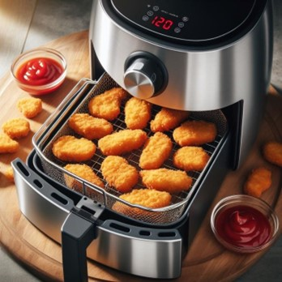

Tervetuloa Airfryer-fanien virallisen epävirallisille sivuille!
Olet astunut sisään paikkaan, jossa rapsakat herkut ja terveelliset vaihtoehdot kohtaavat täydellisesti. Tämä sivusto on omistettu kaikille, jotka rakastavat innovatiivista ruoanlaittoa Airfryer-laitteiden kanssa.
Olit sitten kokenut ruoanlaittaja tai vasta aloitteleva Airfryer-käyttäjä, löydät täältä inspiroivia reseptejä, vinkkejä laitteen käyttöön ja jaettuja kokemuksia muiden innokkaiden fanien kanssa. Valmistaudu tutustumaan herkullisiin ja terveellisiin ruokiin, jotka syntyvät ilman rasvaa mutta täynnä makua ja koostumusta.
”Airfryer ei ole vain keittiölaitteisto - se on elämäntapa.”
Mmmmmm... herkkua!